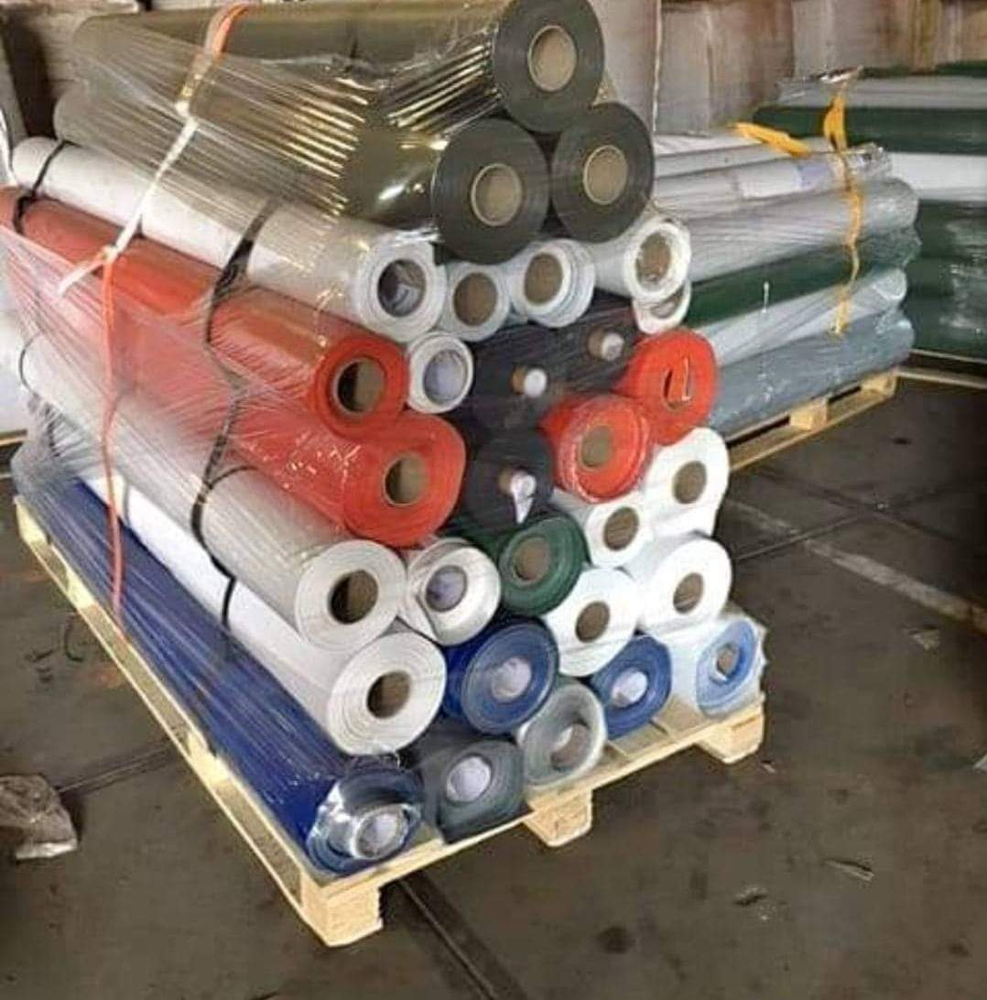

Turkey & Germany
PVC Boat Fabrics
All weights and colors available for professional inflatable boats, RIB tubes and accessories.
High-performance PVC boat fabrics from Turkey, Germany, Taiwan, Korea and China – suitable for inflatable tubes, floors and heavy-duty marine applications.
All weights and colors available for professional inflatable boats, RIB tubes and accessories.
High-quality fabrics from Taiwan and Korea – ideal for mid- to high-range inflatable boat production.

Reinforced PVC specially designed for inflatable floors – strong, durable and easy to weld.
Best-quality Chinese PVC boat fabrics, offering excellent price–performance for large-volume projects.
European-made Mehler fabrics – premium choice for high-end inflatable boats and RIB manufacturers.
Reliable Turkish-made boat fabrics designed for long-term use in harsh marine environments.
Additional textures, colors and surface finishes available on demand for OEM production.